| 日付 | 2007年11月17日（土） |
|---|---|
| 山域 | 奥秩父 |
| メンバー | 単独 |
| 山行形態 | 日帰り |
| アクセス | 電車、バス |
| ルート (Map) | 窪平→父恋し道→大沢ノ頭→小楢山→一杯水→大沢ノ頭→妙見山→牧平 |
今日は久々の晴れ。
甲府盆地に近い、たおやかな小楢山に行く。
8:42 窪平バス停到着。標高470m。
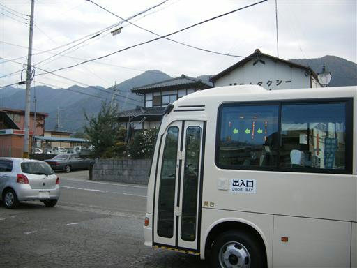
遠くに小楢山が見える。左が大沢ノ頭、右が小楢山。
麓まで行くのにも結構距離がありそう。
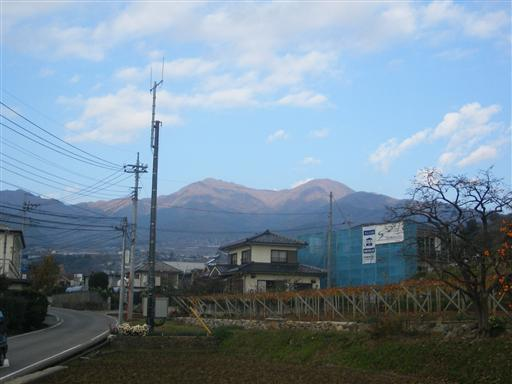
見事に手入れされた庭。
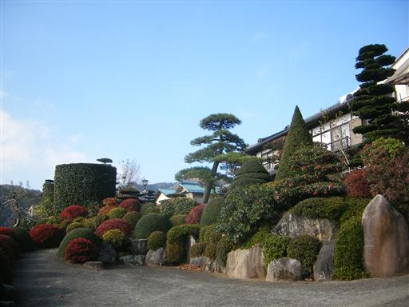
山梨はブドウが有名。あちこちにブドウ畑がある。
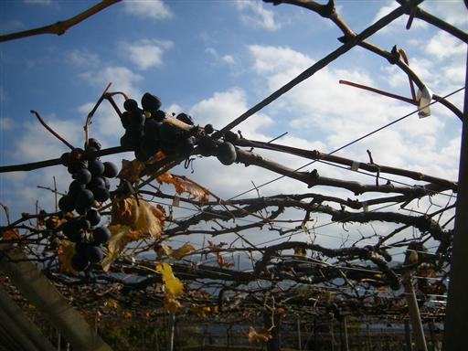
オーチャードヴィレッジ・フフに到着。
公共の宿泊施設だが休業中…
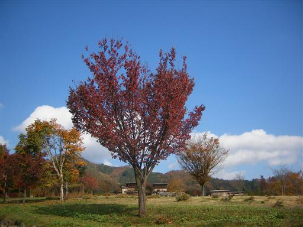
この辺りは紅葉が綺麗。
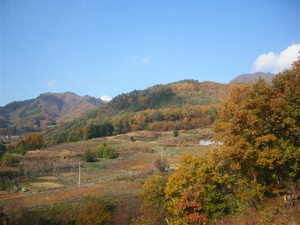
トイレ。何故ローマ字？
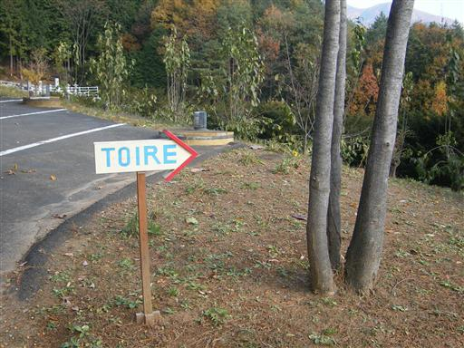
ここからようやく登山道が始まる。しばらくは車道歩きが続く。
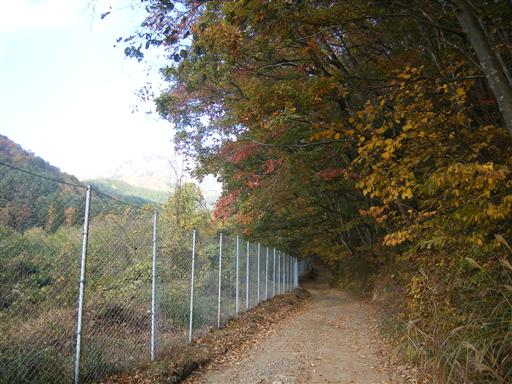
父恋し道（左）と母恋し道（右）の分岐点。
登山道が面白そうな、左の道を選ぶ。
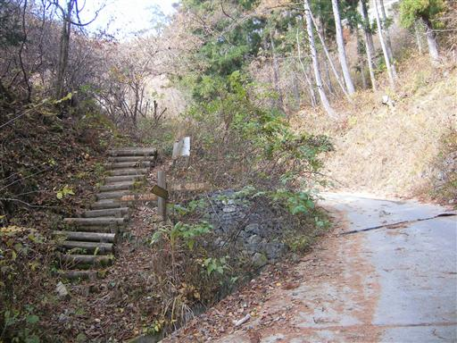
父恋し道にはあちこちに石仏が立っている。
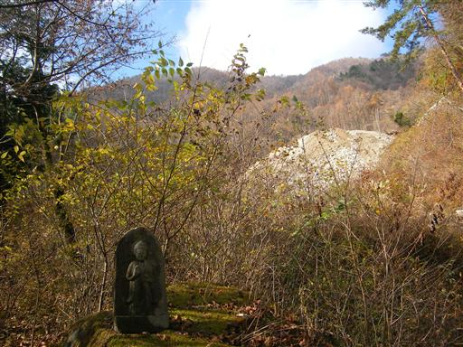
ここのルートはエアリアマップ上で点線になっているが、比較的道は明瞭。
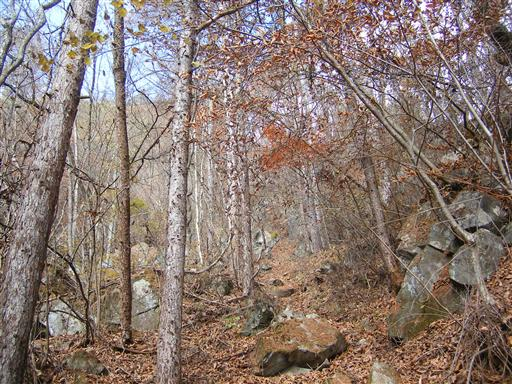
蛙石。どの辺りが蛙なのかは不明。
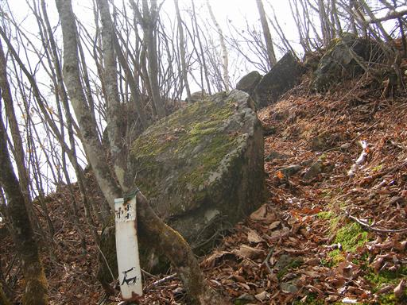
屏風岩。屏風を開けたような立派な岩。
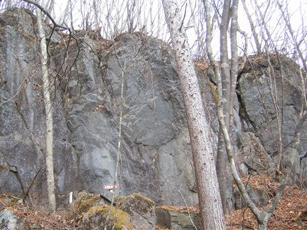
大沢ノ頭に到着。標高1673m。
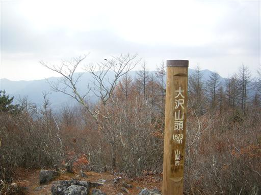
大沢ノ頭と小楢山の間には幕岩という大岩がある。
この岩には攀じ登るための鎖が用意されている。
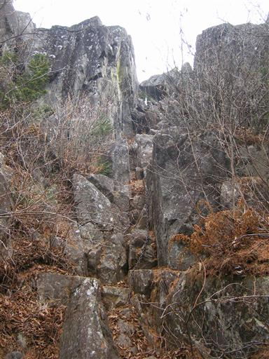
幕岩の上部。遮るものがないので、ここからの展望は非常によい。
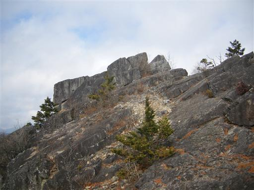
目の前にはゆったりとした小楢山が見える。
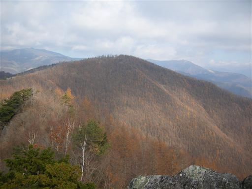
幕岩から下りて小楢山をめざす。
上を見上げると、今にも落ちてきそうな岩が…
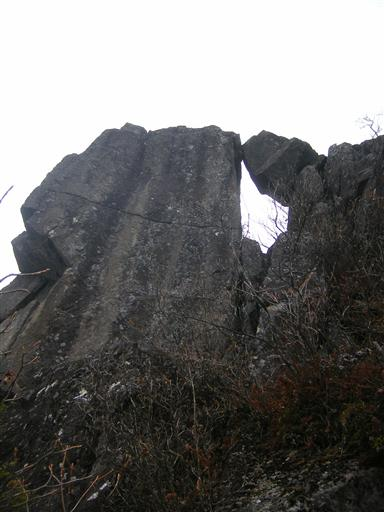
12:33 小楢山山頂到着。標高1713m。

小広い山頂は草原が広がっていて、まわりには白い木がたくさん立っている。
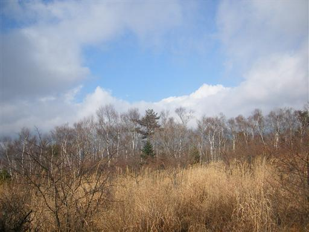
15名ほどの団体登山客がいたが、彼らが去った後は誰もいなくなる。
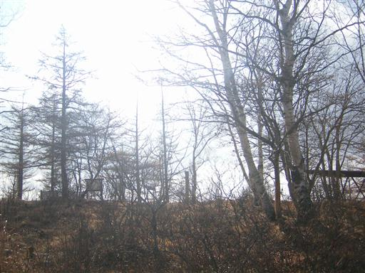
昼食をとって下山開始。
幕岩に先ほどの団体客が大勢登っている。
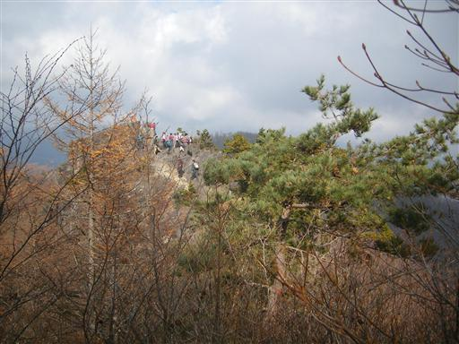
下山道からは甲府盆地が望める。
天気は悪くないが、霞んでいてすっきりとは見えない。
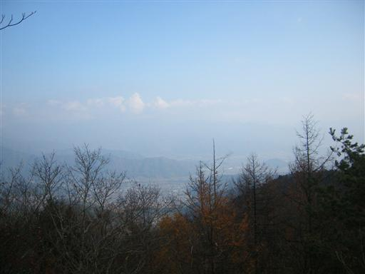
下山道から振り返ると、大沢ノ頭が大きく聳えている。
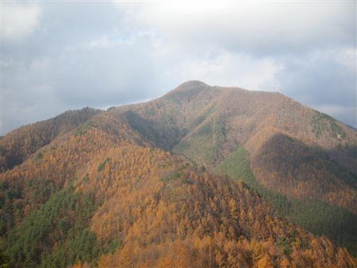
下山道の尾根上に乗る小ピーク・妙見山に到着。標高1224m。
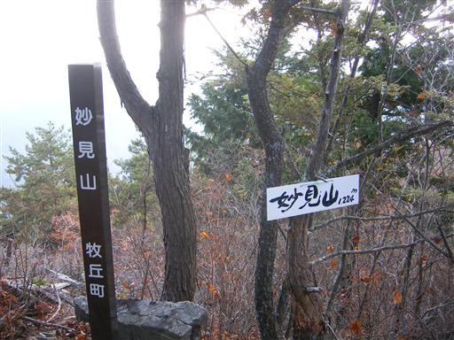
まだ3時にもなっていないのに、だいぶ日が傾いてきた。
とにかく日が短い。
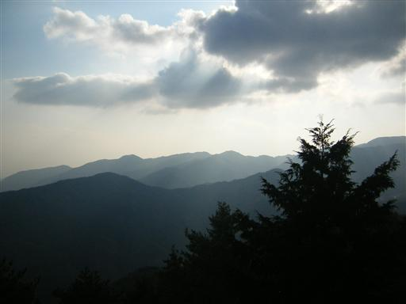
下山。静かな集落にたどり着く。
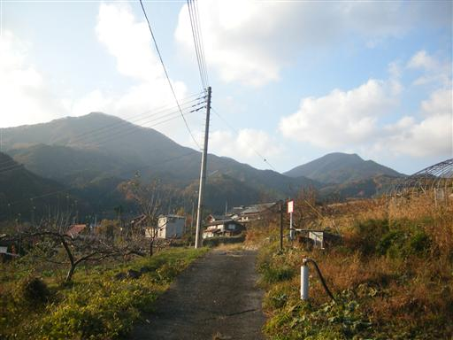
神社の側には立派な銀杏の木がたっている。
15:39 牧平バス停到着。標高755m。
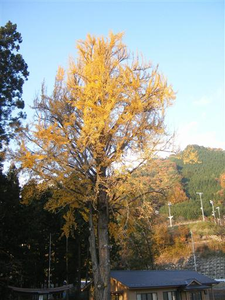